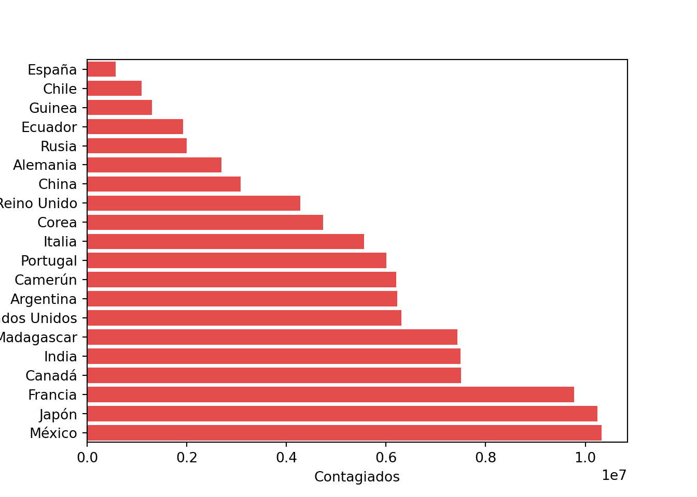
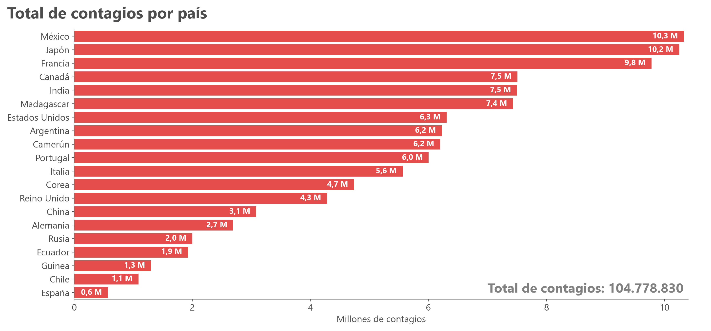

import pandas as pd
import matplotlib.pyplot as plt
import seaborn as snsEn este post, se explorará cómo crear y personalizar un gráfico de barras en Python utilizando las bibliotecas Pandas, Matplotlib y Seaborn. Se explicará desde la obtención y preparación de los datos hasta la personalización de la gráfica, incluyendo cambios en el tipo de letra, ordenamiento de los datos y la adición de texto complementario.
Librerías
Antes de comenzar, es importante conocer las librerías que utilizaremos. Se trabajarán con funciones de la librería Pandas para la manipulación de los datos y matplotlib con seaborn para la elaboración de la gráfica:
Pandas: Librería para manipulación y análisis de datos estructurados. Nos permite trabajar con estructuras de datos como DataFrames.
Matplotlib: Biblioteca básica para la creación de gráficos en Python. En este post se utilizará para la personalización de la gráfica (cambio de color, modificar los ejes, tipo de letra, etc.).
Seaborn: Biblioteca basada en Matplotlib que ofrece una interfaz de alto nivel para la creación de gráficos estadísticos atractivos y complejos. Fácil y simple de usar, en pocas líneas de código es posible elaborar gráficas complejas.
Paso 1: Obtención de los datos
Los datos están cargados en un google sheet, contiene la cantidad de contagios de una X enfermedad en distintos países.
url_1 = "https://drive.google.com/file/d/1chBndOfQob4OY2lUsQPoe3bOZUiixjOa/view?usp=sharing"
path_1 = 'https://drive.google.com/uc?export=download&id='+url_1.split('/')[-2]
df = pd.read_csv(path_1)Paso 2: Exploración de los datos
df.head() Paises Contagiados
0 España 569457
1 Chile 1088398
2 Guinea 1302202
3 Ecuador 1930001
4 Rusia 2000091Dos columnas de datos, paises y la cantidad de contagiados. Creamos un gráfico de barras con seaborn:
f, ax = plt.subplots() # Crear la figura y los ejes con un tamaño específico
sns.barplot(y = "Paises" , x = "Contagiados" , data = df ,
color = "r", alpha = .8)
plt.show()
Se observa en la gráfica que la cantidad de contagiados está ordenado de menor a mayor y en el eje X la cantidad de contagiados se transformó a notación científica.
Paso 3: Preparación de los datos.
Modificaremos la cantidad para mostrarlo en “millones” y ordenaremos los datos para que aparezcan de mayor a menor, esto para facilitar la lectura y compresión del gráfico.
df= df.sort_values(by=["Contagiados"], ascending=False )
df["Contagiados"] = df["Contagiados"]/1000000
x = df["Contagiados"].sum()*1000000
df.head() Paises Contagiados
19 México 10.327423
18 Japón 10.248705
17 Francia 9.776457
16 Canadá 7.506864
15 India 7.498847En la variable x se almacenó la cantidad total de contagiados, este dato lo utilizaremos más adelante.
Paso 4: Modificación del estilo
Tipo de letra
Configuramos el tipo de letra que se utilizará en el gráfico estableciendo font.family en ‘Segoe UI’.
plt.rcParams['font.family'] = 'Segoe UI'Personalización de los ejes
Límites del Eje X: Ajustamos el límite máximo del eje x a 10.4 millones para asegurar que todas las barras se muestren correctamente.
Etiquetas de los Ejes: Añadimos una etiqueta al eje x y dejamos el eje y sin etiqueta. También ajustamos el tamaño y color de las etiquetas de los ejes para mejorar la legibilidad.
Cambio de color: ‘#4D4D4D’ es un color gris oscuro (por gusto personal).
# Configurar límites y etiquetas de los ejes
ax.set_xlim(0, 10.4)
ax.set_xlabel("Millones de contagios", fontsize=14, color='#4D4D4D')
ax.set_ylabel("", fontsize=0)
# Ajustar el tamaño y color de las etiquetas del eje x e y
ax.tick_params(axis='y', labelsize=14, colors='#4D4D4D')
ax.tick_params(axis='x', labelsize=14, colors='#4D4D4D')Personalización de los bordes del gráfico
Dejo visible solo el eje inferior y el lateral izquierdo:
# Eliminar ejes superiores y derechos
ax.spines['top'].set_visible(False)
ax.spines['right'].set_visible(False)
# Cambiar el color de los ejes inferiores e izquierdos
ax.spines['bottom'].set_color('#4D4D4D')
ax.spines['left'].set_color('#4D4D4D') Añadir etiquetas de valor a las barras
Añadimos etiquetas de valor dentro de cada barra para que muestran el número de contagiados en millones, con un decimal y utilizando una coma como separador decimal. El texto se posicionará al final de la barra, alineado a la derecha. Utilizamos color blanco y negrita para asegurar que el texto sea legible sobre el fondo rojo de las barras.
# Añadir etiquetas de valor a cada barra dentro de la barra al final
for patch in ax.patches:
width = patch.get_width()
y = patch.get_y() + patch.get_height() / 2
# Convertir el número a string con coma como separador decimal
formatted_width = f'{width:.1f}'.replace('.', ',')
# Posicionar el texto ligeramente dentro de la barra
ax.text(
width - 0.1, # Desplazamiento hacia la izquierda para estar dentro
y,
f'{formatted_width} M', # Usar el valor con coma
ha='right', # Alinear el texto a la derecha para que quede al final
va='center',
color="white",
fontweight='bold',
fontsize=12
)Añadir títulos y texto complementario
Utilizamos plt.suptitle para añadir un título principal al gráfico, ajustando su posición horizontal y vertical para que se alinee a la izquierda y no interfiera con el gráfico.
Añadimos un texto dentro del gráfico que muestra el total de contagiados calculado previamente. Ajustamos su posición para que se sitúe dentro del área del gráfico sin superponerse a otros elementos.
# Añadir título principal
plt.suptitle(
'Total de contagios por país',
y=0.98,
horizontalalignment='left',
x=0.01,
fontsize=24,
fontweight="bold",
color='#4D4D4D'
)
# Añadir texto adicional con la suma total de contagiados
ax.text(
7, 19,
f'Total de contagios: {int(x):,}'.replace(',', '.'),
color='grey',
fontsize=20,
fontweight='bold'
)El resultado
plt.rcParams['font.family'] = 'Segoe UI'
#plt.rcParams['font.sans-serif'] = ['Arial'] # O cualquier fuente que prefieras
# Crear la figura y los ejes
fig, ax = plt.subplots(figsize=(15, 7), dpi=120) #editar tamaño del plot (está en gran tamaño para html)
# cambiar fondo del plot
#fig.patch.set_facecolor('#F5F5F5') # Fondo exterior (alrededor del gráfico)
#ax.set_facecolor('#F5F5F5') # Fondo interior del gráfico
# Crear la gráfica de barras
sns.barplot(
y="Paises",
x="Contagiados",
data=df,
color="r",
alpha=0.8,
ax=ax
)
# Configurar límites y etiquetas de los ejes
ax.set_xlim(0, 10.4)(0.0, 10.4)ax.set_xlabel("Millones de contagios", fontsize=14, color='#4D4D4D')
ax.set_ylabel("", fontsize=0)
# Ajustar el tamaño y color de las etiquetas del eje x e y
ax.tick_params(axis='y', labelsize=14, colors='#4D4D4D')
ax.tick_params(axis='x', labelsize=14, colors='#4D4D4D')
# Eliminar ehes específicas
ax.spines['top'].set_visible(False)
ax.spines['right'].set_visible(False)
# cambiar de color ejes específicas
ax.spines['bottom'].set_color('#4D4D4D')
ax.spines['left'].set_color('#4D4D4D')
# Añadir etiquetas de valor a cada barra dentro de la barra al final
for patch in ax.patches:
width = patch.get_width()
y = patch.get_y() + patch.get_height() / 2
# Convertir el número a string con coma como separador decimal
formatted_width = f'{width:.1f}'.replace('.', ',')
# Posicionar el texto ligeramente dentro de la barra
ax.text(
width - 0.1, # Desplazamiento hacia la izquierda para estar dentro
y,
f'{formatted_width} M', # Usar el valor con coma
ha='right', # Alinear el texto a la derecha para que quede al final
va='center',
color="white",
fontweight='bold',
fontsize=12
)
# Añadir título principal
plt.suptitle(
'Total de contagios por país',
y=0.98,
horizontalalignment='left',
x=0.01,
fontsize=24,
fontweight="bold",
color='#4D4D4D'
)
# Añadir texto adicional con la suma total de contagiados
ax.text(
7, 19,
f'Total de contagios: {int(x):,}'.replace(',', '.'),
color='grey',
fontsize=20,
fontweight='bold'
)
plt.tight_layout() #para ajustar el plot opupar el espacio
plt.show()
La personalización de gráficos es esencial para presentar datos de manera clara y efectiva. Al ajustar elementos como el tipo de letra, colores, etiquetas y añadir información complementaria, puedes mejorar significativamente la comprensión y el impacto visual de tus gráficos.